A two-space audit of self-supervised learning
Does an SSL method keep its promise
where we actually use it?
Every method enforces its goal in the loss space. We deploy from the backbone. We measured the gap — then turned the audit into a way to rank and train.
The question
Methods enforce their goal at the space the loss touches (z). But probes, kNN and transfer all read the backbone (h).
The matched frame
The measuring stick
The model zoo
The opening finding
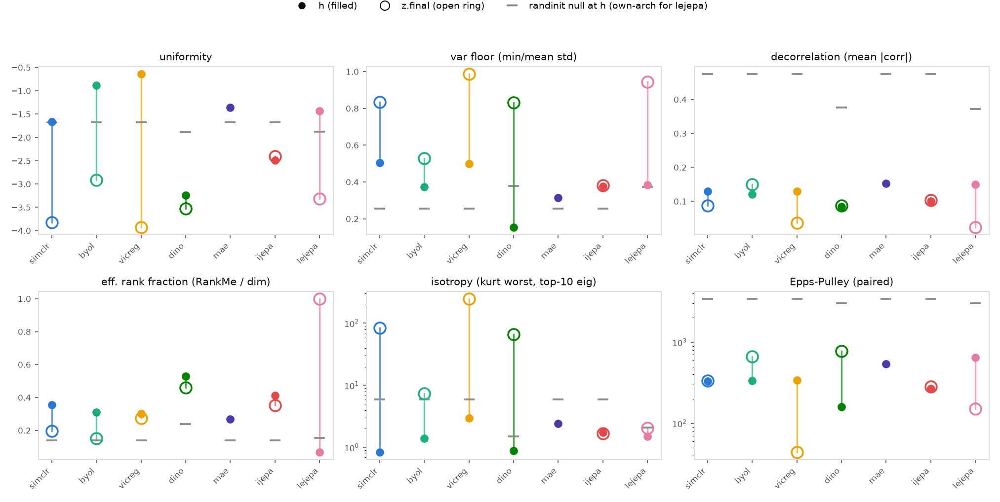
Discovery
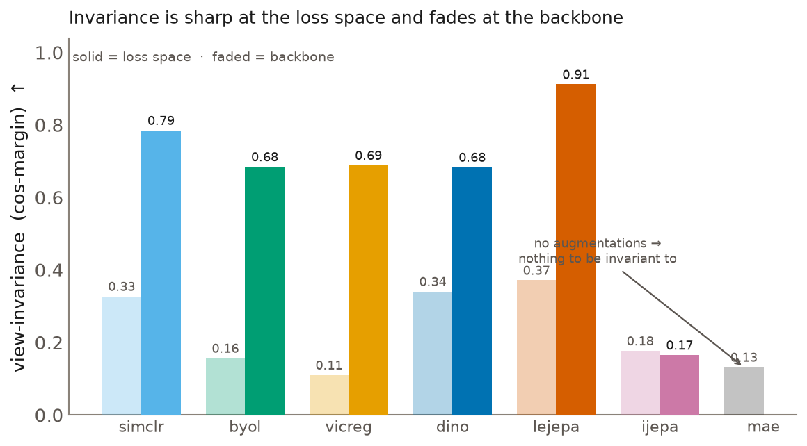
Move 1 · build an intervention
standard pipeline
our move
A pure mean+covariance term — blind to clusters by construction. We sweep its strength from a whisper to a shove.
Move 1 · dose from toxic…
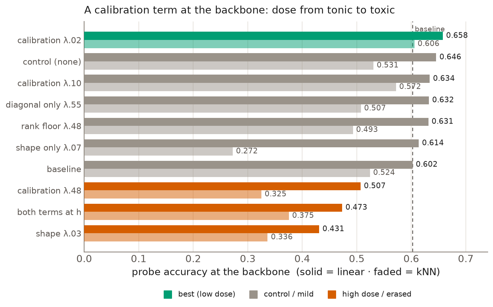
Move 1 · …to tonic
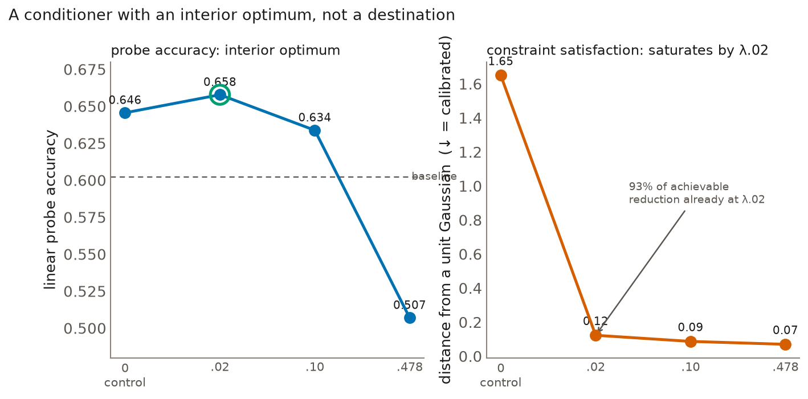
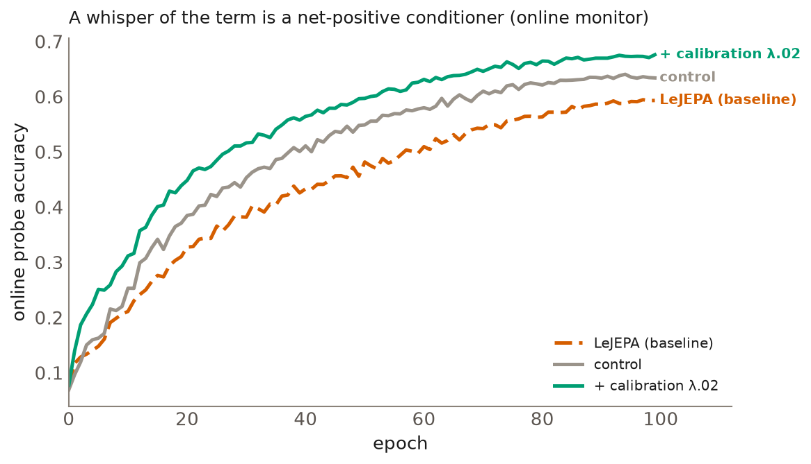
Move 1 · does it generalize?
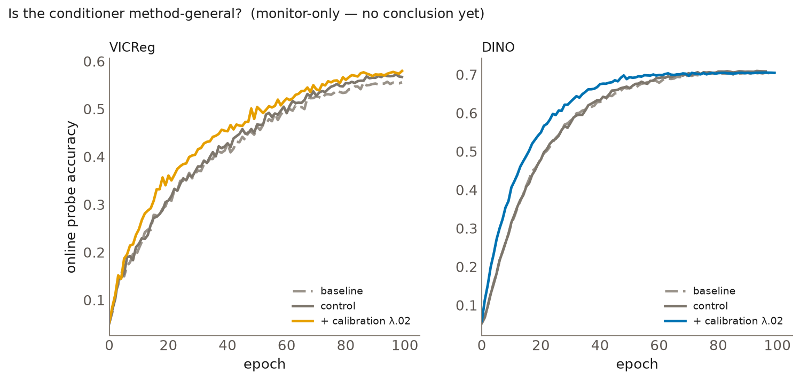
A sharper question
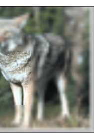
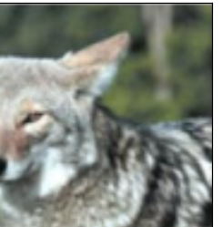
Give each model an image; ask how well its features predict a held-out patch — encoded as a frozen MAE description passed through random Fourier features (RFF). How well it recovers that target is the predictive score, D_read (a held-out linear fit — no labels, no training).
The result
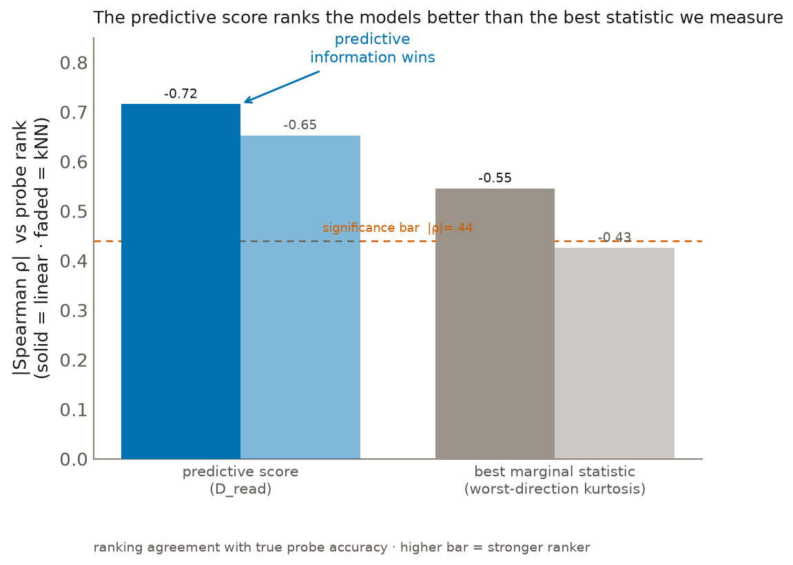
Conclusion
Where we're headed: use that predictive signal to select and train representations directly.
In one line
Appendix · instruments
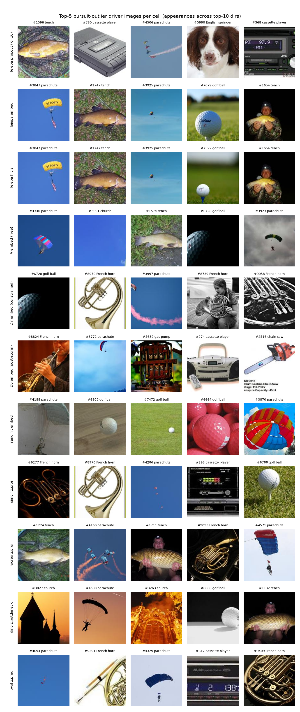
Appendix · the ranking metric
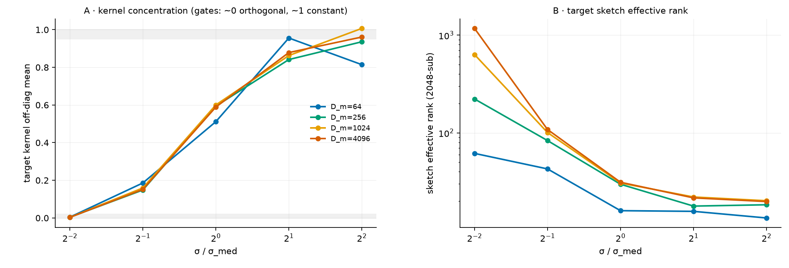
Appendix · how we work